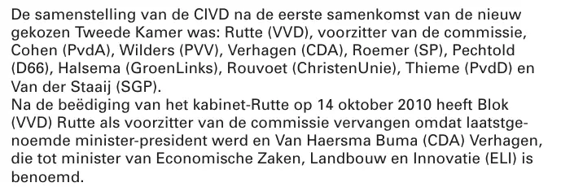

Beweisstück · Kammerdrucksache
Kommission für die Nachrichten- und Sicherheitsdienste, Bericht über 2010, 16. Mai 2011
Die Passage
„Die Zusammensetzung der CIVD nach der ersten Zusammenkunft der neu gewählten Zweiten Kammer war: Rutte (VVD), Vorsitzender der Kommission, Cohen (PvdA), Wilders (PVV), Verhagen (CDA), Roemer (SP), Pechtold (D66), Halsema (GroenLinks), Rouvoet (ChristenUnie), Thieme (PvdD) und Van der Staaij (SGP). Nach der Vereidigung des Kabinetts Rutte am 14. Oktober 2010 hat Blok (VVD) Rutte als Vorsitzenden der Kommission abgelöst, weil Letzterer Ministerpräsident wurde, und Van Haersma Buma (CDA) Verhagen, der zum Minister für Wirtschaft, Landwirtschaft und Innovation (ELI) ernannt worden ist.“ Seite 2, unter der Überschrift „Samenstelling van de commissie“ (Zusammensetzung der Kommission). Aus dem Niederländischen übersetzt; der Originaltext steht unten.
Originaltext
“De samenstelling van de CIVD na de eerste samenkomst van de nieuw gekozen Tweede Kamer was: Rutte (VVD), voorzitter van de commissie, Cohen (PvdA), Wilders (PVV), Verhagen (CDA), Roemer (SP), Pechtold (D66), Halsema (GroenLinks), Rouvoet (ChristenUnie), Thieme (PvdD) en Van der Staaij (SGP). Na de beëdiging van het kabinet-Rutte op 14 oktober 2010 heeft Blok (VVD) Rutte als voorzitter van de commissie vervangen omdat laatstgenoemde minister-president werd en Van Haersma Buma (CDA) Verhagen, die tot minister van Economische Zaken, Landbouw en Innovatie (ELI) is benoemd.” Die Zeilen sind hier zusammengeführt.

Warum dieses Dokument wichtig ist
Dieser Bericht über das Jahr 2010 nennt die Zusammensetzung der Kommission für die Nachrichten- und Sicherheitsdienste, die aus den Vorsitzenden der Fraktionen der Zweiten Kammer (niederländisches Parlament) besteht. Nach den Wahlen vom Juni 2010 gehörten der Kommission unter anderem Cohen (PvdA) und Wilders (PVV) an, und nach der Vereidigung des Kabinetts Rutte am 14. Oktober 2010 löste Blok (VVD) Rutte als Vorsitzenden ab. Cohen, Wilders und Blok waren also alle drei Mitglieder, als Giltay ihnen am 20. November 2010 seinen vertraulichen Brief mit Zeugenbericht sandte. Der Kommissionsbericht ist von Blok als Vorsitzendem unterzeichnet. Über jenen Brief sagt der Bericht nichts.
Herkunft
- Dokument
- Bericht einer Parlamentskommission (Kammerdrucksache)
- Autor
- Kommission für die Nachrichten- und Sicherheitsdienste der Zweiten Kammer
- Datum
- Verabschiedet am 16. Mai 2011
- Geschäftszeichen
- Kamerstukken II (Kammerdrucksachen der Zweiten Kammer) 2010/11, 32 771, Nr. 1
- Betreff
- „Verslag van de commissie voor de Inlichtingen- en Veiligheidsdiensten over haar werkzaamheden in 2010“ (Bericht der Kommission für die Nachrichten- und Sicherheitsdienste über ihre Tätigkeit im Jahr 2010)
- Unterzeichnet
- Der Vorsitzende der Kommission, Blok, und der Sekretär der Kommission, De Gier
- Sprache
- Niederländisch
- Fundstelle
- zoek.
officielebekendmakingen. nl/ kst-32771-1 - Seiten
- 5
- Siehe auch
- Giltay an drei Mitglieder der CIVD, 20. November 2010
Zitiert in: dem Essay „Das Verbot fiel, das Buch hielt stand“ im Kapitel (7) „Nie eine inhaltliche Antwort“.
Beweiskarte: https://
Dokument: https://
Abgerufen am 9. Oktober 2026.

Diese Seite ist ein Beweisstück zum Buch Der Cover-up-General von Edwin Giltay und zur dazugehörigen Website.